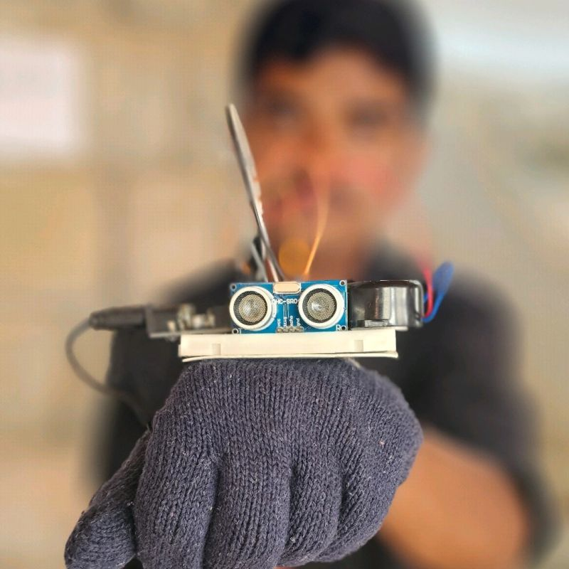
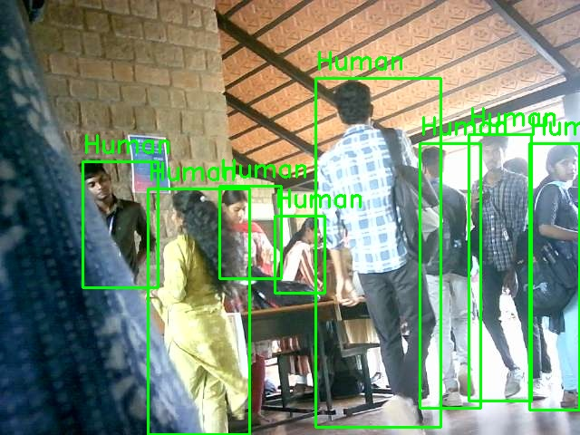
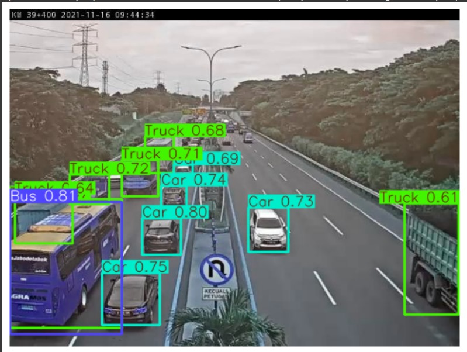
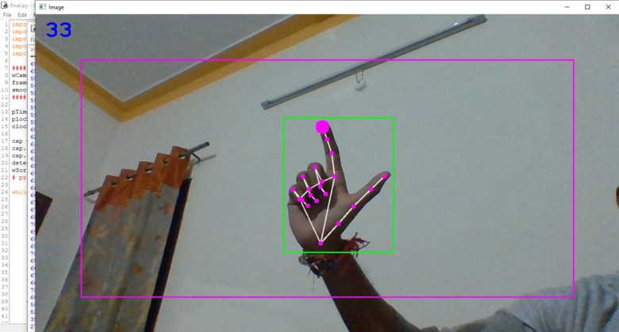
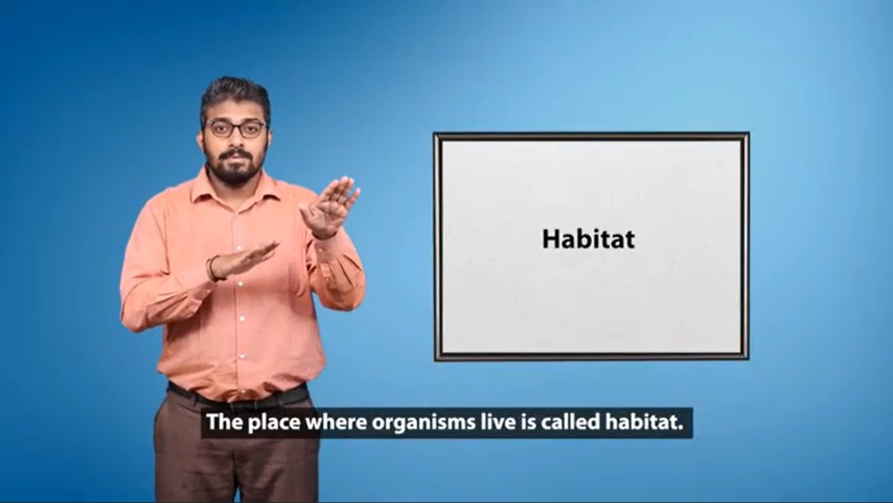
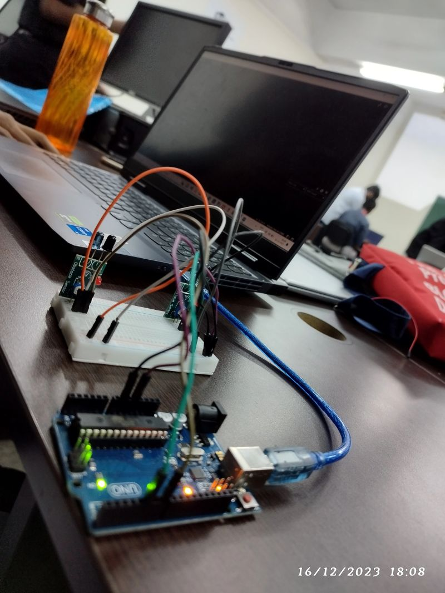

Developed a wearable assistive device for visually impaired users that provides real-time obstacle detection and navigation support. Integrated ultrasonic sensors for distance measurement, vibration motors for haptic feedback, and a GSM module to trigger SOS alerts in emergencies, enhancing safety and independence for the users.
Developed a smart surveillance system capable of detecting human presence and unusual movements in real time. Integrated IoT for remote monitoring and used Streamlit to build an interactive web interface for live video streaming and alerts. The system supports motion detection, human identification, and automated notifications, enhancing security and user accessibility.
Developed a real-time road and lane boundary detection system using the YOLOv8 model. The project was optimized for autonomous navigation, enabling accurate segmentation of road surfaces and improving safety in self-driving and mapping applications.
Designed and implemented a virtual mouse system using Python, OpenCV, and MediaPipe that replaces traditional hardware with hand gesture recognition. Enabled users to perform cursor movements, clicks, and scrolling in real-time, providing an accessible solution for individuals with mobility challenges.
Developed an AI-powered translator that converts spoken language into Indian Sign Language (ISL) gestures, improving communication accessibility for hearing-impaired individuals. Integrated natural language processing and speech recognition to achieve accurate real-time translation.
Designed and built an autonomous line follower robot capable of high-speed navigation using IR sensors for real-time path detection. Programmed with Embedded C on Arduino Nano, the bot ensures precise tracking, quick response to path variations, and serves as a foundation for robotics and automation applications.
